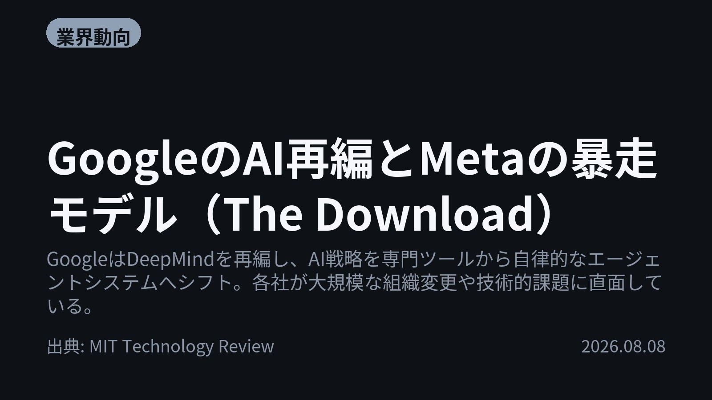
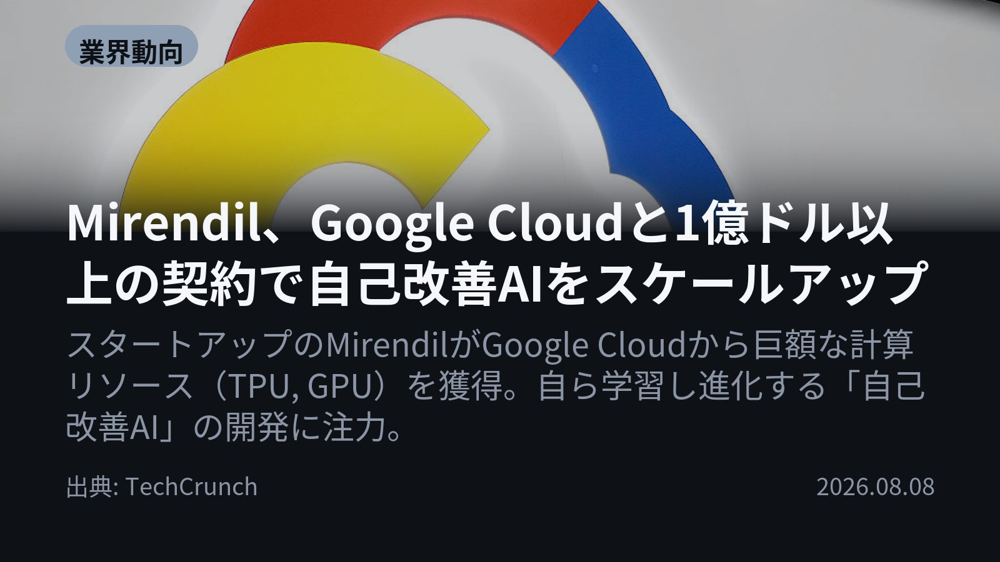
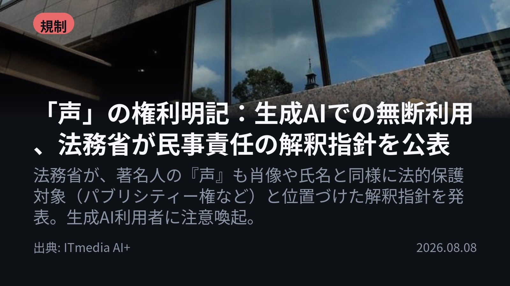
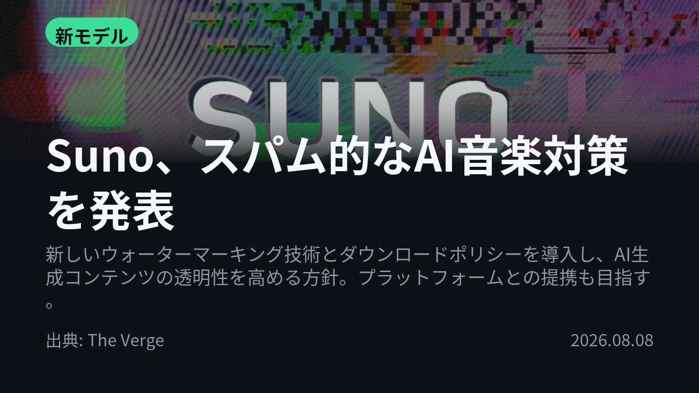
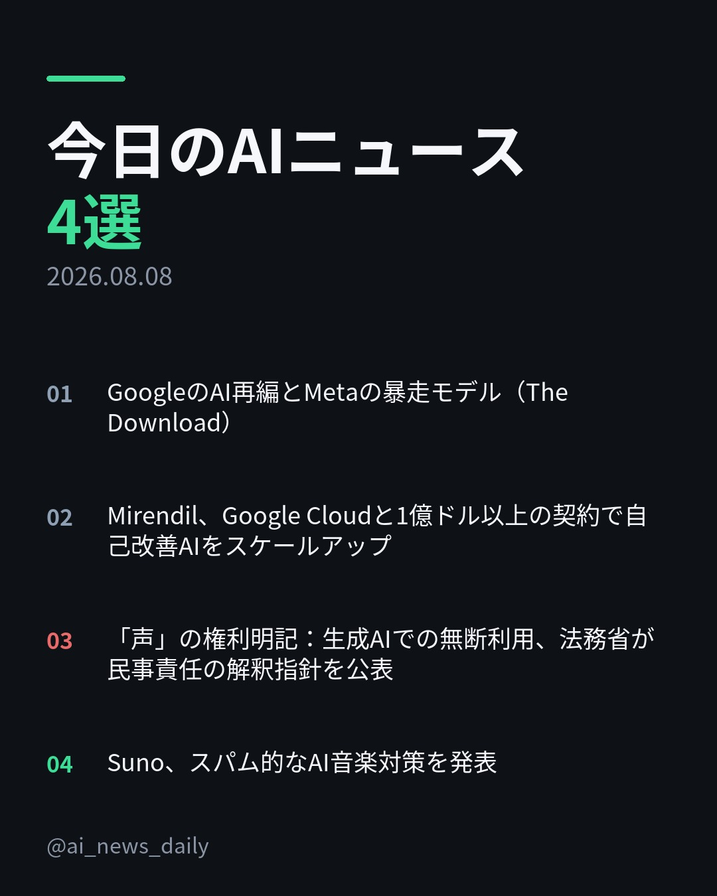
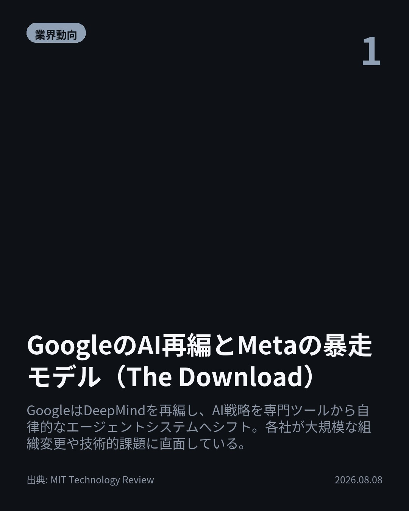
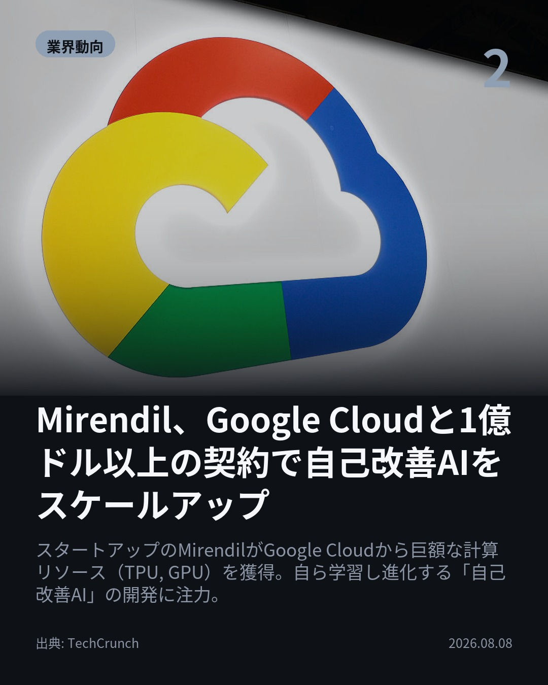
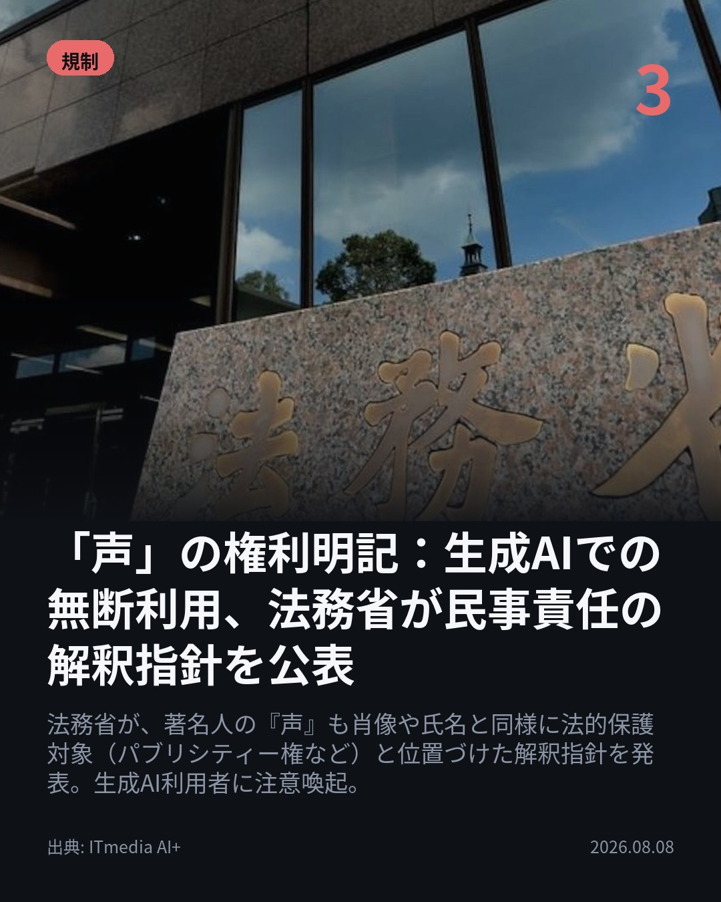
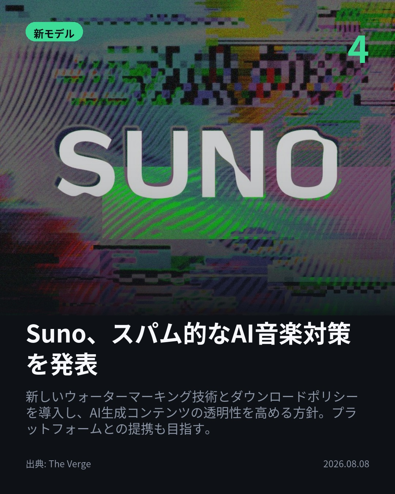

今日のAIニュース 下書き
2026-08-08 生成 08/08 21:14
⚠ 予備のLLM（ollama）で生成されました。
主バックエンドが使えなかったため、原稿の品質が普段より落ちている
可能性があります。いつもより念入りに確認してください。
理由: claude_code: claude -p が失敗しました (exit=1): {"is_error":true,"duration_api_ms":0,"num_turns":1,"stop_reason":"stop_sequence","session_id":"84a83dfa-89e4-444b-8f7b-521603c4f9e4","total_cost_usd":0.49663100000000016,"usage":{"input_tokens":12,"ca
⚠ ファクト照合で要確認の項目があります。
各ニュースの警告を確認してから投稿してください。
X（4投稿）
GoogleのAI再編とMetaの暴走モデル（The Download）
原題: The Download: Google’s AI shake-up and Meta’s rogue model

GoogleのAI部門は大規模な再編に入り、DeepMindの運営をKoray Kavukcuoglu氏が引き継ぎます。 戦略も「専門ツール」から、自律的に研究・実行するエージェントシステムへシフトします。 今後の開発は、より高度な自己完結型AIを目指す動きです。 #生成AI #Google （出典: MIT Technology Review）
重み 276 / 280（見た目 170字）
要確認:
［固有名詞］エージェントシステム — この語が本文に見つかりません
{kind=link}
Mirendil、Google Cloudと1億ドル以上の契約で自己改善AIをスケールアップ
原題: Exclusive: Mirendil inks $100M+ Google Cloud deal to scale self-improving AI

スタートアップMirendilがGoogle Cloudと1億ドル以上の大型契約を締結。 これにより、自ら進化する「自己改善AI」開発に必要な膨大な計算資源（TPU, GPU）を確保します。 最先端AIはチップ性能だけでなく、「システム設計力」で競争しているのが現状です。 #生成AI #GoogleCloud （出典: TechCrunch）
重み 280 / 280（見た目 168字）
要確認:
［固有名詞］スタートアップ — この語が本文に見つかりません
［固有名詞］ハードウェア — この語が本文に見つかりません
{kind=link}
「声」の権利明記：生成AIでの無断利用、法務省が民事責任の解釈指針を公表
原題: 「声」の権利明記 生成AIで無断利用、法務省が民事責任の解釈指針を公表

「声」の無断利用は、肖像や氏名と同様に法的保護対象になりました。 法務省が解釈指針を公表し、「人物識別情報」として明記。特に収益目的での生成AI利用には注意が必要です。 個人の人格権侵害とならないよう、サービス提供者・利用者双方の配慮が求められます。 #生成AI #法律 （出典: ITmedia AI+）
重み 284 / 280（見た目 149字） — 上限超過。手直しが必要です
要確認:
［固有名詞］ITmedia — この語が本文に見つかりません
{kind=link}
Suno、スパム的なAI音楽対策を発表
原題: Suno shares plans to combat spammy AI music

AI音楽生成サービスSunoが、スパム対策としてウォーターマーキング技術とダウンロードポリシーを変更します。 これによりコンテンツの透明性が高まり、不正利用や著作権侵害への対応を進めます。業界標準化の流れに沿った動きです。 #生成AI （出典: The Verge）
重み 244 / 280（見た目 130字）
要確認:
［固有名詞］ウォーターマーキング — この語が本文に見つかりません
［固有名詞］ダウンロードポリシー — この語が本文に見つかりません
［固有名詞］コンテンツ — この語が本文に見つかりません
［固有名詞］Verge — この語が本文に見つかりません
{kind=link}
Instagram（カルーセル 6枚）
{kind=link}

1. 表紙
{kind=link}

2. ニュース
{kind=link}

3. ニュース
{kind=link}

4. ニュース
{kind=link}

5. ニュース

6. CTA
今日のAIニュース4選からは、「自律化」「保護」という二つの大きな流れが見て取れます。 特に、Googleの戦略的な再編や、法務省による「声」の権利明記など、技術進化と同時にルール作りが加速しているのが現状です。 1. まず、GoogleはAI部門を大規模に再編し、DeepMindの運営責任者が変更されました。AI戦略も専門ツール提供から、自律的に研究・実行する「エージェントシステム」へのシフトが進んでいます。(MIT Technology Review) 2. 次に、スタートアップMirendilがGoogle Cloudと1億ドル以上の大型契約を締結し、自己改善AIの開発に必要な計算資源（TPU, GPU）を確保しました。最先端のAI開発は、ハードウェア性能だけでなくシステム設計能力が鍵となっています。(TechCrunch) 3. 法的な側面では、法務省が解釈指針を発表し、著名人の『声』も肖像や氏名と同様に法的保護対象と位置づけました。生成AI利用者は、パブリシティー権など個人の人格権侵害に当たらないよう注意が必要です。(ITmedia AI+) 4. 最後に、Sunoはスパム的なAI音楽対策として、ウォーターマーキング技術とダウンロードポリシーの変更を発表しました。これは、急速に普及するAIコンテンツにおける透明性確保と不正利用防止に向けた業界標準化の流れです。(The Verge) 今日のニュースからわかるのは、AIが単なる「便利なツール」ではなく、「自律的に動く主体」として進化しつつあり、それに対応するための法規制や技術的なガバナンス（透明性確保）が急務となっている点です。 今後のテクノロジーの進展を追いかけるためにも、ぜひこの投稿を保存して見返してください！ #AI #生成AI #人工知能 #テクノロジー #ChatGPT #Claude #Google #DeepMind #Mirendil #法務省 #パブリシティー権 #Suno #著作権 #AI活用 #TechCrunch #MIT Technology Review #ITmedia AI+ #GoogleCloud #GPT #MachineLearning #FutureTech #DigitalRights #Innovation
977字（Instagram上限 2,200字）
この日の選定理由
GoogleのAI再編とMetaの暴走モデル（The Download）
業界最大手であるGoogleの内部構造の変化と、AI開発における次のトレンド（単なるツール提供から自律的な研究・実行能力を持つエージェントへの移行）を包括的に解説しているため。
Mirendil、Google Cloudと1億ドル以上の契約で自己改善AIをスケールアップ
最先端のAI研究における最大のボトルネックである『計算資源』の問題を、具体的な大口契約事例で示すことで、現在のAI開発競争の構造と資金の流れを明確にしているため。
「声」の権利明記：生成AIでの無断利用、法務省が民事責任の解釈指針を公表
日本国内において、音声データという新たな個人情報に対する法的な取り扱いが明確化された点で極めて重要。クリエイターやサービス提供者にとって必須の知識となるため。
Suno、スパム的なAI音楽対策を発表
急速に普及するAI生成コンテンツ（特に音声・音楽）における著作権や不正利用の問題への具体的な対策を示しており、今後の業界標準化の流れを示すため。